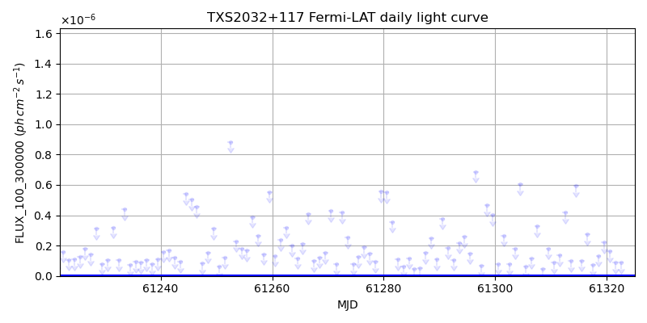
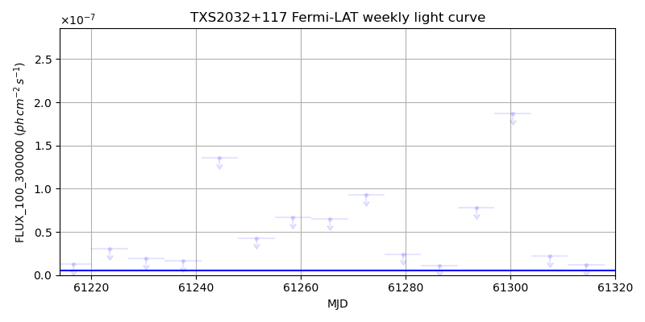
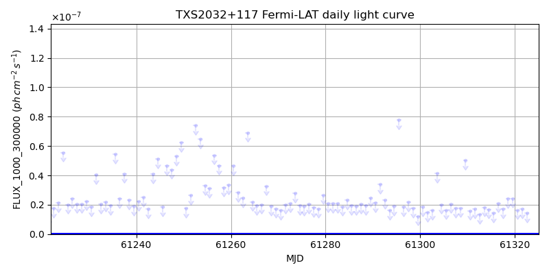
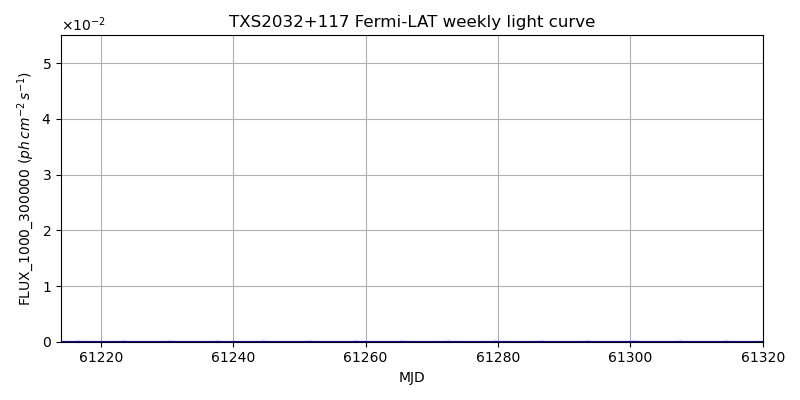

LAT Lightcurve site: https://fermi.gsfc.nasa.gov/ssc/data/access/lat/msl_lc/source/TXS_2032p117
NED: Query
Time of last update of this page: UT: 2026-10-10 15:28 (MJD: 61323.645)
| Property | Value |
|---|---|
| R.A. | 20:34:37.20 |
| Dec. | 11:54:32.4 |
| z | 0.607 |
| 3FGL SpectrumType | PowerLaw |
| 3FGL PL Index | 2.47 |
| 3FGL Flux_100_300000 | 1.45e-08 1 / (s cm2) |
| 3FGL Flux_1000_300000 | 4.86e-10 1 / (s cm2) |
| 3FGL Flux >200 GeV | 1.96e-13 1 / (s cm2) |
| 3FGL Extrap. Crab >200 GeV | 0.00 |
| 3FGL Flux After EBL Absorption >200GeV | 1.94e-14 1 / (s cm2) |
| 3FGL EBL Crab Fraction >200GeV | 0.00 |

| MJD | dMJD | Flux | dFlux | Frac3FGL | FracCrab>200GeV | EBLFracCrab>200GeV |
|---|---|---|---|---|---|---|
| 61318.50 | 0.50 | 1.34e-07 | 0.00e+00 | 0.00 | 0.00 | 0.00 |
| 61319.50 | 0.50 | 2.21e-07 | 0.00e+00 | 0.00 | 0.00 | 0.00 |
| 61320.50 | 0.50 | 1.64e-07 | 0.00e+00 | 0.00 | 0.00 | 0.00 |
| 61321.50 | 0.50 | 8.96e-08 | 0.00e+00 | 0.00 | 0.00 | 0.00 |
| 61322.50 | 0.50 | 8.94e-08 | 0.00e+00 | 0.00 | 0.00 | 0.00 |

| MJD | dMJD | Flux | dFlux | Frac3FGL | FracCrab>200GeV | EBLFracCrab>200GeV |
|---|---|---|---|---|---|---|
| 61286.50 | 3.50 | 1.13e-08 | 0.00e+00 | 0.00 | 0.00 | 0.00 |
| 61293.50 | 3.50 | 7.78e-08 | 0.00e+00 | 0.00 | 0.00 | 0.00 |
| 61300.50 | 3.50 | 1.87e-07 | 0.00e+00 | 0.00 | 0.00 | 0.00 |
| 61307.50 | 3.50 | 2.17e-08 | 0.00e+00 | 0.00 | 0.00 | 0.00 |
| 61314.50 | 3.50 | 1.14e-08 | 0.00e+00 | 0.00 | 0.00 | 0.00 |

| MJD | dMJD | Flux | dFlux | Frac3FGL | FracCrab>200GeV | EBLFracCrab>200GeV |
|---|---|---|---|---|---|---|
| 61318.50 | 0.50 | 2.39e-08 | 0.00e+00 | 0.00 | 0.00 | 0.00 |
| 61319.50 | 0.50 | 2.44e-08 | 0.00e+00 | 0.00 | 0.00 | 0.00 |
| 61320.50 | 0.50 | 1.64e-08 | 0.00e+00 | 0.00 | 0.00 | 0.00 |
| 61321.50 | 0.50 | 1.70e-08 | 0.00e+00 | 0.00 | 0.00 | 0.00 |
| 61322.50 | 0.50 | 1.43e-08 | 0.00e+00 | 0.00 | 0.00 | 0.00 |

| MJD | dMJD | Flux | dFlux | Frac3FGL | FracCrab>200GeV | EBLFracCrab>200GeV |
|---|---|---|---|---|---|---|
| 61286.50 | 3.50 | 2.94e-09 | 0.00e+00 | 0.00 | 0.00 | 0.00 |
| 61293.50 | 3.50 | 8.16e-09 | 0.00e+00 | 0.00 | 0.00 | 0.00 |
| 61300.50 | 3.50 | 2.58e-09 | 0.00e+00 | 0.00 | 0.00 | 0.00 |
| 61307.50 | 3.50 | 3.68e-09 | 0.00e+00 | 0.00 | 0.00 | 0.00 |
| 61314.50 | 3.50 | 2.36e-09 | 0.00e+00 | 0.00 | 0.00 | 0.00 |
--------------------------------------------------------- Using user-supplied coords: 20:34:37.20 11:54:32.4 2000 --------------------------------------------------------- FLWO UT night of: 2026-10-11 Local Sid. @ Midnight: 00:55 Sunset (-15.0) (local, UT): 19:04 02:04 Sunrise (-15.0) (local, UT): 05:18 12:18 Moonrise (local, UT): Moonset (local, UT): Moon phase: 0.01 --------------------------------------------------------- AzTime LSID UT Obj_el Obj_az Mn_el Mn_az Sep. --------------------------------------------------------- 19:04 19:58 02:04 68.6 154.6 -16.1 264.2 112.1 19:34 20:29 02:34 70.3 175.0 -22.3 267.8 111.8 20:04 20:59 03:04 69.6 196.5 -28.5 271.5 111.6 20:34 21:29 03:34 66.8 214.9 -34.7 275.4 111.3 21:04 21:59 04:04 62.5 229.0 -40.8 279.7 111.0 21:34 22:29 04:34 57.3 239.4 -46.8 284.6 110.7 22:04 22:59 05:04 51.6 247.4 -52.7 290.5 110.4 22:34 23:29 05:34 45.6 253.7 -58.4 297.7 110.1 23:04 23:59 06:04 39.4 259.1 -63.6 307.3 109.8 23:34 00:29 06:34 33.0 263.7 -68.1 320.3 109.5 00:04 00:59 07:04 26.7 267.9 -71.3 338.2 109.1 00:34 01:29 07:34 20.3 271.9 -72.6 0.4 108.8 01:04 01:59 08:04 13.9 275.7 -71.5 22.7 108.5 01:34 02:30 08:34 7.6 279.5 -68.3 40.8 108.2 02:04 03:00 09:04 1.6 283.4 -63.9 54.1 107.8 02:34 03:30 09:34 -4.2 287.4 -58.7 63.8 107.5 03:04 04:00 10:04 -11.0 291.6 -53.1 71.2 107.2 03:34 04:30 10:34 -16.8 296.2 -47.3 77.2 106.9 04:04 05:00 11:04 -22.4 301.3 -41.4 82.2 106.6 04:34 05:30 11:34 -27.7 306.9 -35.3 86.6 106.4 05:04 06:00 12:04 -32.6 313.3 -29.2 90.6 106.1 05:18 06:14 12:18 -34.7 316.4 -26.5 92.4 106.0 --------------------------------------------------------- Dark hours >55 deg.: 2.71 srcstart (UT): 2026-10-11 02:04 srcend (UT): 2026-10-11 04:46